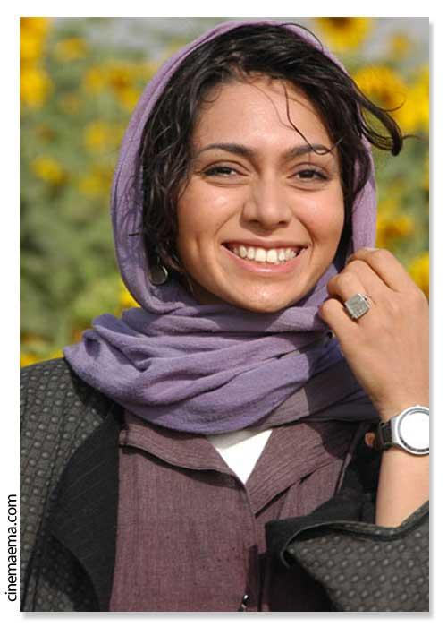

|
|

پگاه آهنگرانی بازیگر سینمای ایران بازداشت شد
چهار شنبه22 تیر 1390
کلمه: پگاه آهنگرانی بازیگرجوان سینمای ایران توسط نیروهای امنیتی بازداشت شده است.
به گزارش العربیه این بازیگر سینما سه روز است در بازداشت به سر می برد . بنا بر اخبار رسیده در این مدت پگاه آهنگرانی با خانواده خود تماسی نگرفته و از محل نگهداری او اطلاعی در دست نیست.
هنوز در مورد اتهامات احتمالی این بازیگر خبری منتشرنشده است.پگاه آهنگرانی بازیگر وفرزند منیژه حکمت از کارگردانان ایرانی و جمشید آهنگرانی کارگردان فیلم های ” جوانمرد ” و ” شبیخون ” است.
او در دوره انتخابات ریاست جمهوری دو سال پیش ایران در ستاد میرحسین موسوی نامزد معترض به انتخابات ریاست جمهوری فعال بوده است.
پگاه آهنگرانی در روزهای پس از انتخابات احضار و مورد بازجویی قرار گرفته بود.
پیش از این اعلام شده بود پگاه آهنگرانی قصد دارد جام جهانی فوتبال زنان را برای شبکه خبری دویچه وله آلمان پوشش دهد.
آهنگرانی پیش از این جشنواره فیلم برلین را برای این شبکه پوشش داده بود.